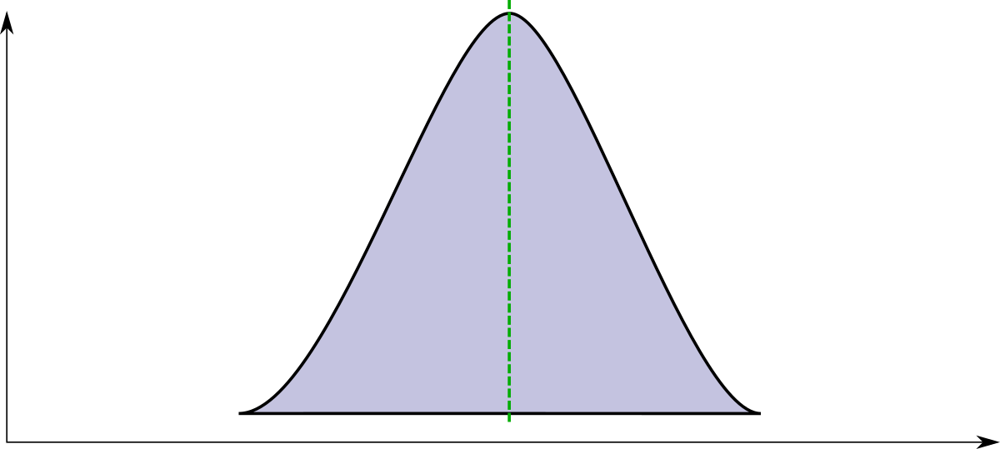
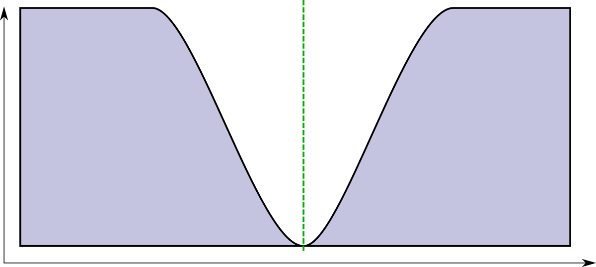

sculpting a sound
While this does sound like, uh, a tone, it certainly doesn't sound very pleasant. It's closer to an alarm sound than music. There are a couple of reasons why that is, let's tackle them one by one.
First of all, a raw square wave is a very harsh sound in itself - We can probably improve upon that. What we need to do is to filter it down to something more mellow. The way we do that is by removing frequency content. Okay, time for some fundamentals again that will allow us to understand this a little better. If we want understand what's going on, it might make sense to try to graph the sound we're hearing in a different way. The oscilloscope style I've been using so far is useful for some things, but it only shows the so called time domain. We can transform this into the "frequency domain" and one way of doing that is the Fast Fourier transform. It's called fourier to honour Jean-Baptiste Joseph Fourier, a mathematician who lived from 1786 to 1830 and did a lot of ground work in understanding how we can basicially divide every signal (in this case: sound) into a bunch of sinewaves at different frequencies and amplitudes. Here's how to build our square waves from a bunch of sinewaves and here's how that looks in the frequency domain. Oh, btw, that lowest frequency sine wave down there to the left? That's a sinewave at our 440 Hz frequency, also called the fundamental. Because it's the loudest of the sinewaves, it's what our brain interprets as the note that is played, even though a lot of other sinewaves are also played that are on completely different frequencies and notes.
If we want to make this sound less harsh, we can use a so-called filter to remove some of the more higher sine waves, because those are what make it sound harsh in the first place. For that, we'll need a low pass filter, that leaves the lower sinewaves intact.
The state variable filter
One rather popular algorhythm to do this is called a state variable filter. The following block diagram shows how it's internals work. Interestingly, this block diagram can be implemented both in software (as we'll see) and in electronics as well which is where this has been developed in the first place.

Here's the main loop of the filter:
def run(input, frequency, q, type: :lowpass)
# derived parameters
q1 = 1.0 / q.to_f
f1 = 2 * Math::PI * frequency / @sampling_frequency
# calculate filters
lowpass = @delay_2 + f1 * @delay_1
highpass = input - lowpass - q1 * @delay_1
bandpass = f1 * highpass + @delay_1
notch = highpass + lowpass
# store delays
@delay_1 = bandpass
@delay_2 = lowpass
# [...]
end
The cool thing with this filter is that with one run, you'll get four different filter types, a lowpass, a highpass, a bandpass and a notch or band reject. If you graph the frequency responses of these, they probably look a little like this:




Did you notice the little hump right around the filter frequency? The state variable filter has a second parameter beyond the filter frequency, which is Q. What Q does is that it feeds back a bit of the filter result into the input. This leads to an emphasis around the actual filter frequency. If you crank Q way up, it will start to self-oscillate. This is also often called "Resonance".
Often, especially when changing the filter frequency over time, upping Q a bit makes a sound more interesting.
Okay, so this does sound a lot nicer, doesn't it, right? But something is not quite right yet. If you compare this sound with something like a piano sound, what's the most obvious difference, apart from the slightly more complex sound of the piano? It's the shape of the sound over time. A piano has a relatively sharp attack, then stays on for a bit and then fades out. You could say it has certain envelope. Which is the name of the next piece of code we're going to discuss. An envelope shapes a sound in a certain way over time. You can influence any parameter in our sound generation so far with an envelope and you'll get an interesting result. Let's start with the most obvious: Making the volume of the sound fade in and out, resulting in less clicks and making it sound more natural.
There are endless ways of how to construct an envelope but the so called ADSR (Attack, Decay, Sustain, Release) envelope sits right in the sweet spot of being very versatile and simple to parameterize. Here's what it looks like:
Here's what the code looks like:
def linear(start, target, length, time)
(target - start) / length * time + start
end
def run(t, released)
if !released
if t < 0.0001 # initialize start value (slightly hacky, but works)
@start_value = @value
return @start_value
end
if t <= a # attack
return @value = linear(@start_value, 1, a, t)
end
if t > a && t < (a + d) # decay
return @value = linear(1.0, s, d, t - a)
end
if t >= a + d # sustain
return @value = s
end
else # release
if t <= a # when released in attack phase
attack_level = linear(@start_value, 1, a, releases)
return linear(attack_level, 0, t - released)
end
if t > a && t < (a + d) # when released in decay phase
decay_level = linear(1.0, s, d, released - a)
return @value = linear(decay_level, 0, r, t - released)
end
if t >= a + d && t < released + r # normal release
return @value = linear(s, 0, r, t - released)
end
if t >= released + r # after release
return @value = 0.0
end
end
end
And here's what it sounds like if we shape the volume of the sound with this envelope. Much better, right?
What else can we do with it? How about we'll modulate the filter frequency of our low pass filter? This emulates a lot of instruments such as the piano or a guitar where the sound starts relatively bright and then gets more muffled at the end.
Of course, we could modulate the pitch of the note as well. Sometimes this works quite well with synthesizer sounds, but as we'll see, it will be invaluable for generating drum sounds.
One last thing that is very useful in sound design is a thing called an LFO. This stands for Low Frequency Oscillator and is exactly that, but instead of running these through a filter into the speakers, we'll use the output to modulate our parameters, such as the pitch, the filter frequency or the amplitude or volume.
If I use an LFO, for example, to modulate the filter, we're quickly getting into wub wub territory.
Used a little more subtly, on the pitch of our oscillator, gives us an effect called vibrato, which, for example, on a violin can be created by quickly, rhythmicly vary the position of your fingertip on the string every so slightly.